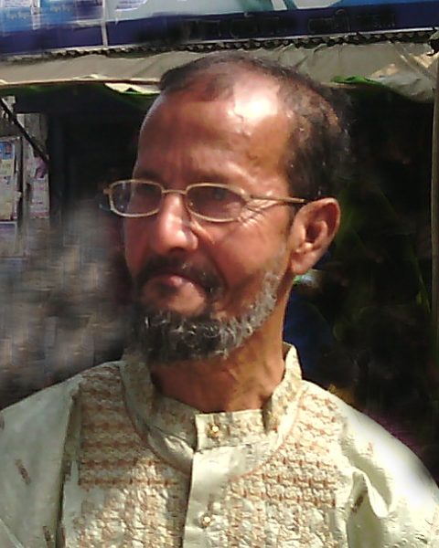
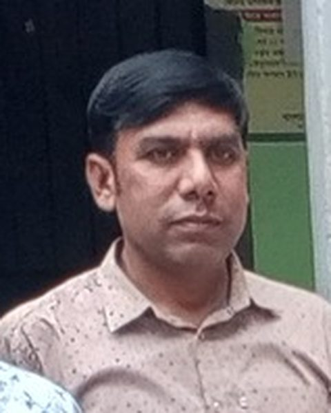

গণিত
মোঃ আবু সাঈদ চৌধুরী
সহকারী প্রধান শিক্ষক · এম.এসসি (গণিত), বি.এড
রুটিন, পরীক্ষা আর শৃঙ্খলার দায়িত্ব তাঁর। এখনও দশম শ্রেণিতে নিজে গণিত ক্লাস নেন।
১৯৯৮ সাল থেকে এই স্কুলে
 বাংলা
বাংলা
শাহনাজ পারভীন
একাডেমিক কো-অর্ডিনেটর · এম.এ (বাংলা), বি.এড
বাংলা পড়ান, আর ক্লাস টেস্ট থেকে রিপোর্ট কার্ড — সব খাতাপত্রের হিসাব রাখেন।
২০০৩ সাল থেকে এই স্কুলে
 পদার্থবিজ্ঞান
পদার্থবিজ্ঞান
সুমন কান্তি দাশ
সিনিয়র শিক্ষক · এম.এসসি (পদার্থবিজ্ঞান), বি.এড
বিজ্ঞান বিভাগের প্রধান। তাঁর হাতে গড়া দল দুইবার বিভাগীয় বিজ্ঞান মেলায় পুরস্কার এনেছে।
২০০৬ সাল থেকে এই স্কুলে
 রসায়ন
রসায়ন
মোঃ ইকবাল হোসেন
সিনিয়র শিক্ষক · এম.এসসি (রসায়ন), বি.এড
রসায়ন পড়ান, ল্যাবের চাবিও তাঁর কাছে। প্র্যাকটিক্যাল খাতা নিয়ে কোনো ছাড় দেন না।
২০০৯ সাল থেকে এই স্কুলে
 জীববিজ্ঞান
জীববিজ্ঞান
রোকসানা আক্তার
সিনিয়র শিক্ষক · এম.এসসি (প্রাণিবিদ্যা), বি.এড
জীববিজ্ঞান পড়ান। স্কুলের ছাদবাগান আর পরিবেশ ক্লাব তাঁর উদ্যোগেই শুরু।
২০০৫ সাল থেকে এই স্কুলে
 গণিত
গণিত
তৌহিদুল ইসলাম
সহকারী শিক্ষক · বি.এসসি (অনার্স), এম.এসসি (গণিত)
৬ষ্ঠ–৮ম শ্রেণির গণিত পড়ান। গণিত অলিম্পিয়াডের প্রস্তুতি ক্লাসও নেন।
২০১৮ সাল থেকে এই স্কুলে
 উচ্চতর গণিত
উচ্চতর গণিত
সজীব দত্ত
সহকারী শিক্ষক · এম.এসসি (গণিত)
নবম-দশমে উচ্চতর গণিত পড়ান। কঠিন অঙ্ক সহজ করে বোঝানোয় তাঁর জুড়ি নেই।
২০১৯ সাল থেকে এই স্কুলে
 ইংরেজি
ইংরেজি
মোঃ শহিদুল আলম
সিনিয়র শিক্ষক · এম.এ (ইংরেজি), বি.এড
ইংরেজি পড়ান। প্রতি বৃহস্পতিবার 'ইংলিশ ক্লাব'-এ শিক্ষার্থীদের কথা বলা শেখান।
২০০৪ সাল থেকে এই স্কুলে
 ইংরেজি
ইংরেজি
মিজানুর রহমান
সহকারী শিক্ষক · এম.এ (ইংরেজি)
৬ষ্ঠ–৮ম শ্রেণির ইংরেজি পড়ান। বিতর্ক ক্লাবের দায়িত্বেও আছেন।
২০২০ সাল থেকে এই স্কুলে
 ব্যবসায় শিক্ষা
ব্যবসায় শিক্ষা
রতন কুমার বড়ুয়া
সিনিয়র শিক্ষক · এম.কম (হিসাববিজ্ঞান), বি.এড
হিসাববিজ্ঞান আর ফিন্যান্স পড়ান। ব্যবসায় শিক্ষা শাখার শিক্ষার্থীরা তাঁকে 'রতন স্যার' নামেই চেনে।
২০০১ সাল থেকে এই স্কুলে
 বাংলাদেশ ও বিশ্বপরিচয়
বাংলাদেশ ও বিশ্বপরিচয়
হাসিনা মমতাজ
সিনিয়র শিক্ষক · এম.এ (ইতিহাস), বি.এড
বাংলাদেশ ও বিশ্বপরিচয় পড়ান। স্কুলের মুক্তিযুদ্ধ কর্নারটা তাঁর হাতেই সাজানো।
২০০৭ সাল থেকে এই স্কুলে
 ভূগোল ও পরিবেশ
ভূগোল ও পরিবেশ
মোঃ নাছির উদ্দিন
সহকারী শিক্ষক · এম.এসসি (ভূগোল)
ভূগোল পড়ান। প্রতি বছর শিক্ষা সফরের প্ল্যানটা তিনিই করেন।
২০১৫ সাল থেকে এই স্কুলে
 আইসিটি
আইসিটি
মোঃ ফয়সাল করিম
সহকারী শিক্ষক · বি.এসসি (সিএসই)
আইসিটি পড়ান, কম্পিউটার ল্যাব চালান। স্কুলের এসএমএস আর ওয়েবসাইটও তিনিই দেখেন।
২০১৭ সাল থেকে এই স্কুলে
 গার্হস্থ্য বিজ্ঞান
গার্হস্থ্য বিজ্ঞান
জান্নাতুল ফেরদৌস
সহকারী শিক্ষক · এম.এসসি (গার্হস্থ্য অর্থনীতি)
গার্হস্থ্য বিজ্ঞান পড়ান। বার্ষিক পিঠা উৎসবের আয়োজনও তাঁর দায়িত্বে।
২০১২ সাল থেকে এই স্কুলে

শারীরিক শিক্ষা
মোঃ এরশাদ উল্লাহ
শরীরচর্চা শিক্ষক · বি.পি.এড
সকালের সমাবেশ থেকে বার্ষিক ক্রীড়া — মাঠের সব কাজ তাঁর হাতে। স্কুল ফুটবল দলের কোচ।
২০১০ সাল থেকে এই স্কুলে